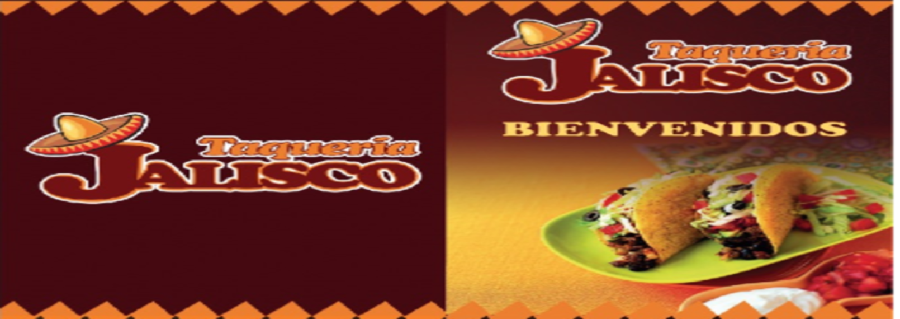
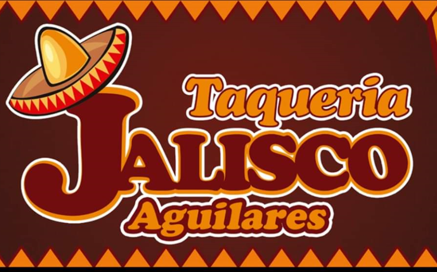

- 


BIENVENIDOS
Taquería Jalisco Tacacity te da la más cordial bienvenida a nuestra Página Web y te invitamos a navegar por nuestro sitio y conocer nuestro menú y promociones.
Ven y prueba nuestra variedad de platillos y bebidas, te esperamos en cualquiera de nuestras sucursales.
Contamos con servicio de videovigilancia las 24 horas del día para tu mayor seguridad y comodidad
SUCURSALES
San Pablo Tacachico

UBICACIÓN: 1a Calle Poniente, #8, Barrio el Centro, San Pablo Tacachico La Libertad.
Aguilares
UBICACIÓN: 4ta calle Poniente, #5, frente al parque central, Costado derecho de la Alcaldía Municipal, Aguilares, San Salvador.
El Paisnal
UBICACIÓN: Calle principal entrada al paisnal #1, Barrio el centro, El Paisnal, San Salvador.